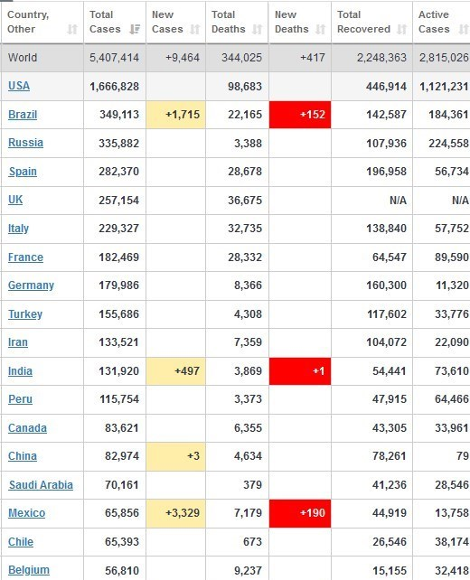

آخرین آمار جهانی

بر اساس آخرین آمار جهانی پایگاه اطلاعاتی "worldometer" تا این لحظه 5 میلیون و 407 هزار و 414 نفر در جهان
به ویروس کرونا (کووید19) مبتلا شدهاند که از این تعداد، 344 هزار و 25 نفر جان خود را از دست دادهاند.
از مجموع تعداد مبتلایان در جهان، تاکنون 2 میلیون و 247 هزار و 963 نفر بهبود یافته و توانستهاند این
بیماری را شکست بدهند.
کشور آمریکا با بیشترین تعداد مبتلایان در جهان با افزایش 21 هزار و 734 مبتلا در 24 ساعت گذشته، به مجموع
یک میلیون و 666 هزار و 828 مبتلا رسیده است؛ تاکنون 98 هزار و 683 آمریکایی مبتلا در این کشور جان خود را
از دست دادهاند.
کشور برزیل که بعد از آمریکا در رده دوم جهان قرار دارد که با افزایش 16 هزار و 731 مبتلا در 24 ساعت گذشته،
به مجموع 349 هزار و 113 مبتلا رسیده است؛ در این کشور تعداد 22 هزار و 165 نفر جان خود را بر اثر ابتلا به
کرونا از دست دادهاند.
کشور روسیه بهعنوان سومین کشور جهان، با افزایش 9 هزار و 434 مبتلا در 24 ساعت گذشته، به مجموع 335 هزار و
882 مبتلا رسیده است؛ تاکنون 3 هزار و 388 روسی جان خود را از دست دادهاند.
کشورهای اسپانیا، انگلیس، ایتالیا، فرانسه و آلمان نیز به ترتیب با 282 هزار و 370، 257 هزار و 154، 229
هزار و 327، 182 هزار و 469 و 179 هزار و 986 مبتلا در ردههای چهارم تا هشتم جهان قرار گرفتهاند.
از لحاظ تعداد بهبودیافتگان نیز کشورهای آمریکا، اسپانیا و آلمان بهترتیب با 446 هزار و 914، 196 هزار و
958 و 160 هزار و 300 هزار بهبودیافته در ردههای اول تا سوم قرار دارند.